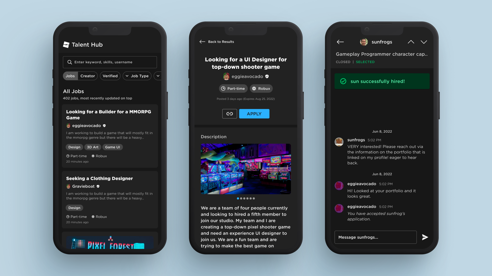
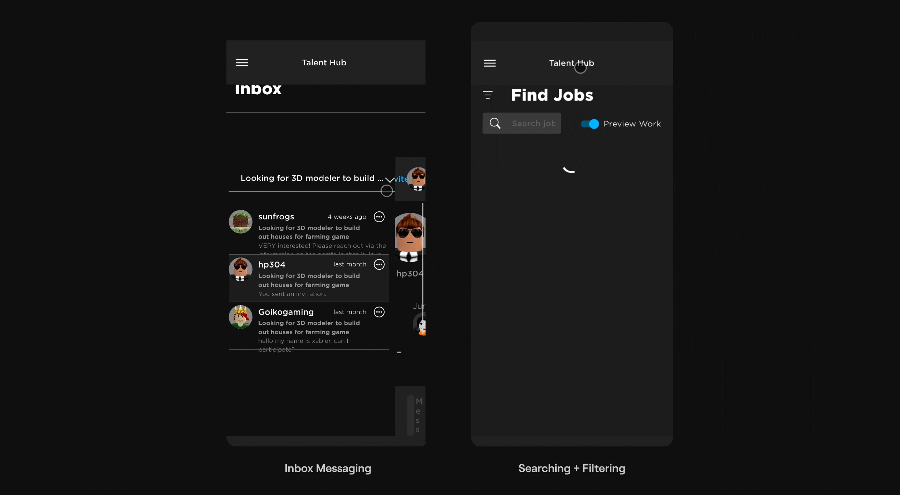
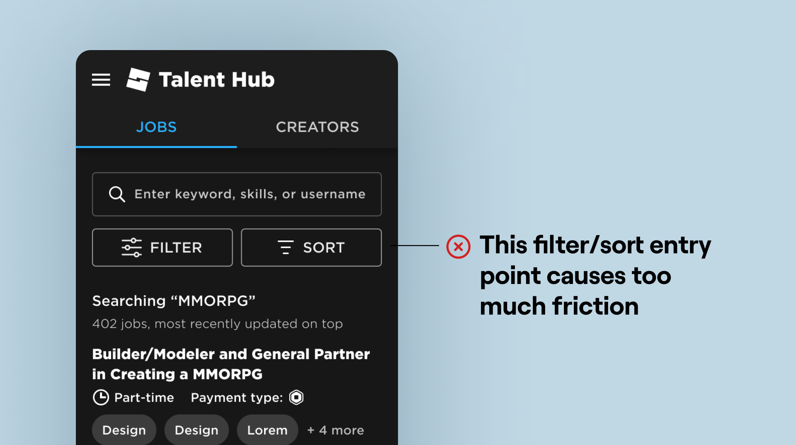
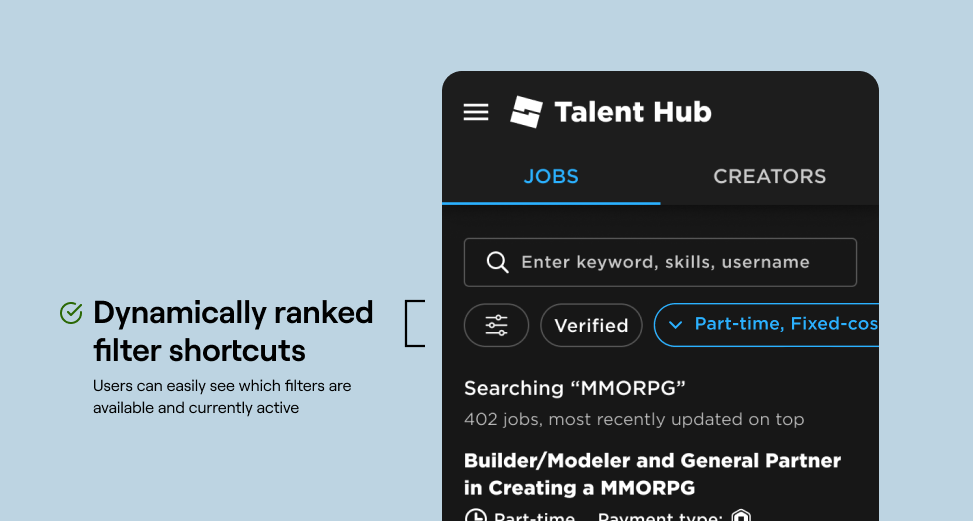
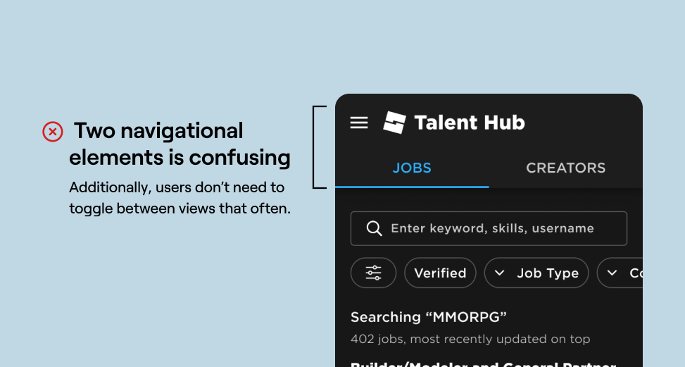
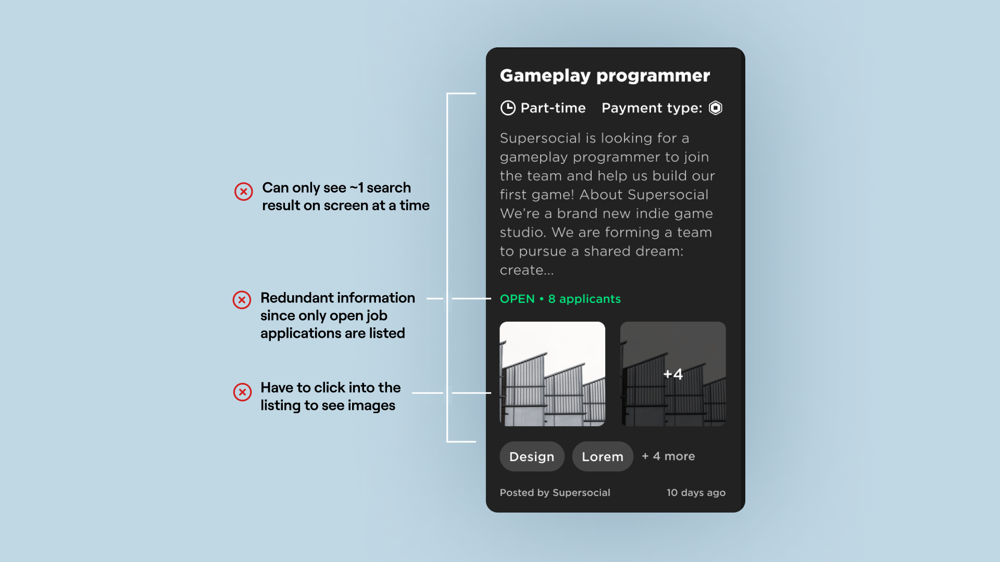
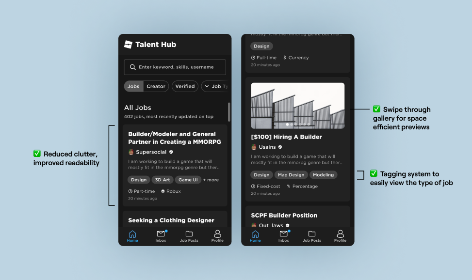
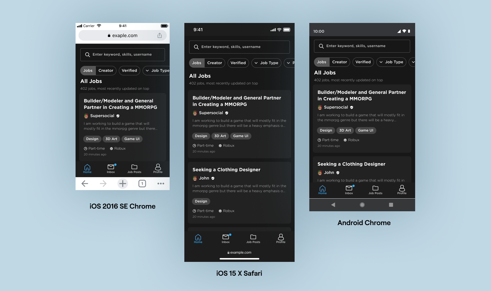
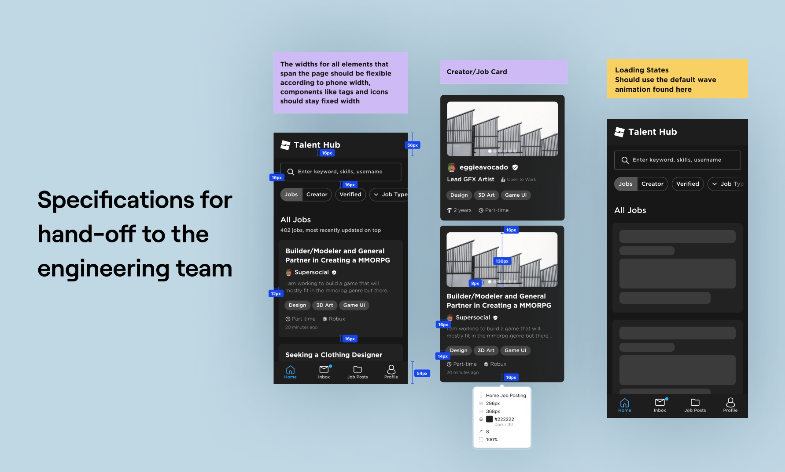
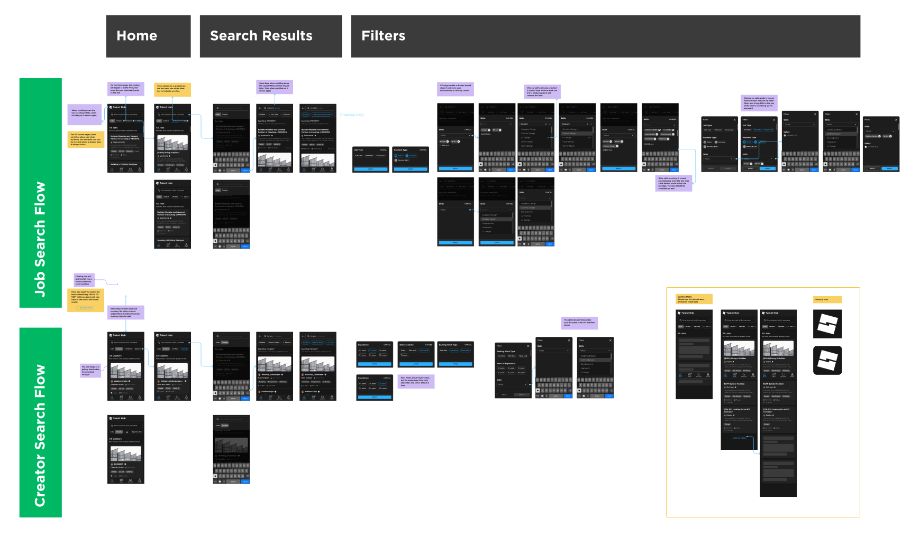

Roblox Talent Hub
Connecting 9.5 million game developers through redesigning the job board's mobile interface.
ROLE
UX Design Intern
DURATION
May - August 2023
VISIT SITE
TEAM
Design Manager:
Sony Verma, Sean Wen
Product Manager:
Anant Agrawal
Engineers:
Arthur Chen, Jeanine Chang, Shengping Yao, Xu Chi
DISCIPLINES
Visual Design
Mobile Web Patterns
Design Systems
TOOLS
Figma
Jira
OVERVIEW
Talent Hub's mission was to connect 9.5 million Roblox developers and help monetize their skills. As product design intern, I led a full redesign of the platform for mobile and touch screen users in 3 months.
During my internship I:
- Led the end-to-end redesign of the Talent Hub platform to be optimized for mobile and touch screens.
- Suggested UX changes for Talent Hub desktop and provided design consulting on feature adds.
- Set the foundation for Roblox's mobile web design system and pushed to add 5+ new components for desktop based on best practices.

🔎 View my final intern presentation
here.
CONTEXT
What is Talent Hub?
Talent Hub is a job board launched by Roblox in 2019. It has two main user flows:
- Users searching for job postings that they want apply to.
- Users looking to hire creators via their profiles.
The platform also has an inbox where all applications and messages are sent.

THE PROBLEM
Talent Hub was not supported on mobile.
When the product launched, the pages were built for desktop and did not function on mobile. However, creators cited that the mobile state of Talent Hub was one of the top reasons they did not use the platform. Not being able to access the platform on mobile meant that it was hard to apply to jobs on the go and communication was slow between employers and applicants.
💬 Imagine you are trying to look for a job
and this is what you see...

PRODUCT GOAL
Building a platform made for first-time users.
The hassle of using Talent Hub turned many of our users to Twitter to look for job opportunities. This was a great platform for creators that had a large following and established reputation, but for new creators, the barrier to entry is high since it takes time to build connections in the community and there are no guardrails against scamming. A large part of the Roblox developer community is under 18 years old so many creators have no experience when it comes to working freelance jobs.
Therefore, it was essential that we improve the mobile platform in order to:
- Provide infrastructure for creators who are just starting out.
- Build a space tailored to the safety of our users.
AUDITING PAIN POINTS
Setting Up for Success
In order to complete a near-full redesign in three months, planning was just as important as execution. To create a realistic timeline that covered all the most important bases, I first audited all the pain points of the platform and grouped the pages by severity and importance. I then worked with product and engineering to created a timeline based on two week sprints.
The last step before I could start designing was making sure we can measure the success of the designs. Working with product and data science, we were able to implement metrics, such as number of applications sent, number of messages sent, and time spent browsing search listings, that would track usage and retention on mobile.
01 SEARCH AND FILTER
How might we guide users to find the most relevant results?
The goal of the homepage is to allow users to easily find the jobs or creators that they are interested in. I redesigned the search flow to be centered around three
design principles:
- Efficiency over comprehensiveness
- Modularity over specificity
- First-time users over power users
DESIGN PROCESS
How did I arrive at this design?
For the first pass, I mapped the UI to a new design system the team was building. This way, I could look past the superficial engineering bugs and begin identifying UX pain points. There were a couple of main issues I needed to target: the navigation, the job card, and the filter system. Let's take a closer look at how I solved these problems.

NITTY GRITTY DESIGN DECISIONS
01. Predicting User Behavior with Quick Shortcuts
🔔 THE BIG QUESTION
How can we make finding relevant results easier?
The game development pipeline encompasses a huge range of skills from scripting to animation to UI design. Being able to filter for the jobs that match a user's skillset and experience level is key. However, the current filters were hard to access, hides which filters were selected, and didn't save user preferences between page loads.

✅ SOLUTION
Surfacing quick shortcuts that get smarter the more you use them.
I referenced the various search interfaces (Google, Apple Maps, Airbnb, Linkedin) and they all had one thing in common: filter shortcuts. They allow users to quickly see what options are available and can be dynamically ranked based on which filters are used most often.

02. Finding the Right Navigational Fit
🔔 THE BIG QUESTION
How should we handle the separation between Creator Search and Job Search?
My first instinct was to use our tab bar component. However, I realized that users didn't need to switch views often and that this option wouldn't scale well. After some valuable feedback, I went back to the drawing board for alternative solutions.

✅ SOLUTION
Restructuring the mental model of the navigation.
To solve this problem, I realized we needed bring this element from a navigational element down to a filter-level toggle. This simplified the mental model from two navigation menus to one. Converting the toggle to a filter also allowed for the platform to easily expand to other user groups. For example, if the platform wanted to add a section that filters for studios instead of individual creators, it could be easily added. This solution came at the same time I was working on the filter shortfults, so two integrated seamlessly.

Advocating for change when necessary.
Since this wasn't a pre-existing component, I had to advocate for this change with sound reasoning and worked with the UX engineer on our design systems team to add this toggle chip component to our web design system.
03. Informative, Scannable Job Listings
🔔 THE BIG QUESTION
How can we structure the anatomy of a job listing to be space efficient, yet easy to read?
The job card went through many iterations of visual re-design since it is the building block of the homepage. I introduced varied font weights, tags, and color to create visual hierarchy. Additionally we added a swipe-through gallery to allow users to preview images related to a posting.

✅ SOLUTION
Take advantage of mobile touch patterns and focus on visual hierarchy.
The job card went through many iterations of visual re-design since it is the building block of the homepage. I introduced varied font weights, tags, and color to create visual hierarchy. Additionally we added a swipe-through gallery to allow users to preview images related to a posting.

RESPONSIVENESS
Stress testing the designs on all screen sizes
In order to make sure that the design was compatible with all screen sizes, I stress tested the designs against a wide range of breakpoints and operating systems.

HANDOFF
Preparing the designs for handoff
After running a series of dogfooding sessions, I was able to validate our design decisions and make improvements on interaction designs and edge-cases. I was able to I hand it off to engineering after two weeks of intense ideation cycles!


02 JOB APPLICATION FLOW
How can we streamline the job application process?
For the job application flow I focused on readability and easy access to action buttons since job postings tended to be text heavy. This allowed the user to avoid unnecessary scrolling when trying to quickly browse through postings.
03 APPLICATION INBOX
How can we keep applications at different statuses organized?
The inbox had to be able to keep track of multiple different statuses and needed to cater to the needs of applicants and employers alike. For this redesign, I focused on adding folders that allowed employers to keep track of different applicants and advocated for multiple new components to be created and added to the design system.
CONCLUSION
Challenges
I had a lot of fun figuring out how to navigate the unique challenges that came with working with an existing product that was migrating to a new design system. In particular I had to figure out how to:
- Balance optimizing for mobile while keeping keeping consistency with the desktop designs.
- Work around UX problems inherited from desktop.
- Modify a design system to be compatible with mobile screen sizes.
Learnings
- Keep all stakeholders updated! A quick sync can save weeks of work/misunderstanding.
- How to design to scale. Designs should be able to accomodate for future goals too!
- Advocate for design changes even if it was not in the original scope.